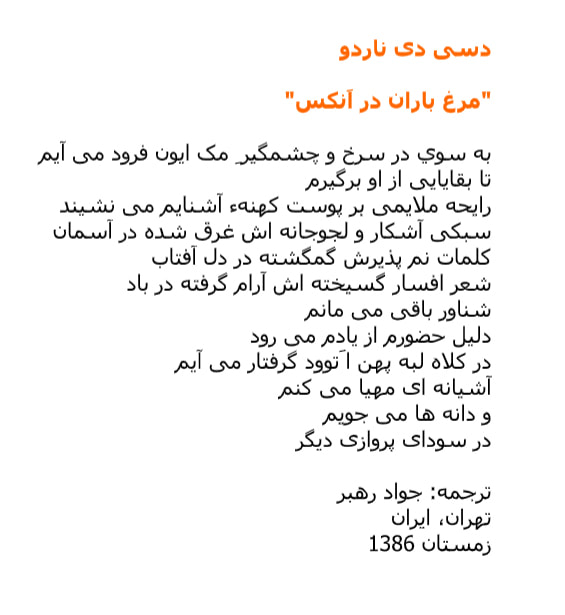

Muse
For study in High School and Post Secondary Curriculums

For study in High School and Post Secondary Curriculums
For study in High School and Post Secondary Curriculums
These Fragile Snowflakes by Shelly Marwood
Based on Di Nardo's poem, "Poetry on Lake Simcoe." It was commissioned and premiered by Shelly Marwood, Jubilate Singers of Toronto in May 2014. It won the 2015 U of T Choral Composition Competition and was sung by the MacMillan Singers on December 6, 2015.
Keep Telling Me
LISTEN Musical score by Andrzej Górecki, Polish-born award-winning composer living in Norway. Voice by award-winning Irish-Canadian mezzo-soprano and actress Wallis Giunta.
Poems by Desi Di Nardo translated by Renzo Ricchi
Poesie di Desi Di Nardo tradotte da Renzo Ricchi
Poems by Desi Di Nardo translated by Javad Rhabar
Javad Rhabar is a publisher/news editor living in Iran who has translated into Farsi "Rainbird in the Annex" and "Poetry on Lake Simcoe".
Rainbird In The Annex
Poems by Desi Di Nardo translated by Javad Rhabar
Javad Rhabar is a publisher/news editor living in Iran who has translated into Farsi "Rainbird in the Annex" and "Poetry on Lake Simcoe".